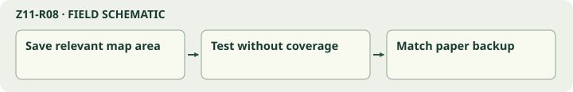

Z11-R08 · Navigation reconstruction · Reconstruction draft
Test offline maps and paper backup
Verify the route remains usable without coverage or power.
Lineage · B014 reconstruction · continuation of r01
When it applies · Before a trip beyond dependable network service.
Equipment · Downloaded map, map reader, paper map and independent power if used.

Actions
- Obtain a current map that includes the planned route, nearby alternatives and identifiable roads or exits.[E01, E02, ED]
- Disconnect the device from the network at home and open the full planned area. Confirm landmarks and scale remain readable.[E02, ED]
- Carry a paper map and use it to point to the same trailhead and route. Practice sharing a last confirmed position from paper.[E02, T06, ED]
Verify · The party can find the trailhead and two checkpoints using either map without network access.[ED]
Stop or change course · If the plan depends entirely on a device you cannot use offline, revise the route or kit before leaving.[E01, E02, ED]
Evidence and editorial notes
- E01 · Minnesota DNR · Safety in State Forests (current web edition)
- Section: Before your trip and while visiting · Conditions: State-forest travel and backcountry planning
Support: Know the route, check conditions, carry navigation and safety equipment and share trip details.
Limitations: Conditions and trail maintenance vary seasonally across forest units. · Conflicting evidence: None; aligns with NPS-H.
Editorial note: Foundation for trip planning and pre-departure risk checks. · Specialist reviewer: Land management and search and rescue
Primary source · checked 2026-11-24 - E02 · NPS · Ten Essentials (current web edition)
- Section: Navigation; insulation; emergency shelter; emergency food and water · Conditions: Outdoor trips; adjust kit to season and route
Support: Carry essential systems including navigation, insulation, light, water and emergency shelter.
Limitations: Carrying items without practice or cold-weather verification does not ensure readiness. · Conflicting evidence: None; baseline kit system architecture.
Editorial note: Supports failure-mode packing and kit verification cards. · Specialist reviewer: Field education and search and rescue
Primary source · checked 2026-11-24 - T06 · NPS · Outdoor Emergency Plan (current web edition)
- Section: If you get lost or hurt; call for help · Conditions: Outdoor US emergency
Support: Communicate location, last known point, situation and needs. Stay put when unable to establish a safe route unless immediate danger requires movement.
Limitations: Cell signal is unreliable in backcountry terrain; pre-trip plans bridge communication gaps. · Conflicting evidence: None; core lost-person decision rule.
Editorial note: Foundation for stay/signal/move and dispatch handoff cards. · Specialist reviewer: Search and rescue
Primary source · checked 2026-11-24
Source lineage · B014 reconstruction · continuation of r01 · Classification · Reconstruction draft.